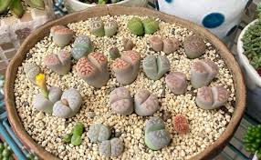

Planta-Pedra
Materiais necessários
- Vaso pequeno com furos na base.
- Substrato extremamente drenável (mistura de muita areia, pedriscos e pouquíssima terra).
- Pinça (opcional, para ajudar a acomodar a planta).
- Um local que receba bastante luz solar direta e seja bem ventilado.
Passo a passo do plantio
- Coloque uma camada grossa de pedrinhas ou argila no fundo do vaso para garantir que a água escorra rápido.
- Preencha o vaso com o substrato arenoso próprio para cactos e suculentas.
- Faça um pequeno buraco e acomode a Planta-Pedra delicadamente, deixando apenas o seu topo colorido exposto acima da terra.
- Não regue imediatamente. Espere pelo menos uma semana para que as raízes se adaptem ao novo vaso.
- Regue raramente. Essas plantas armazenam muita água e apodrecem fácil. Regue apenas quando a planta começar a ficar enrugada (na dúvida, não regue!).
Foto da Planta
